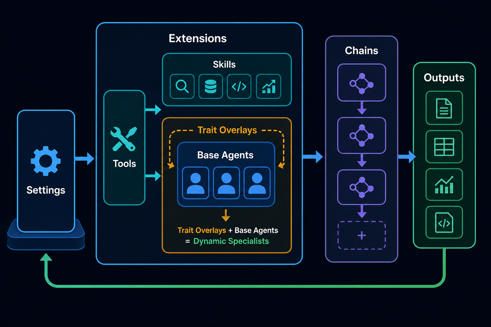
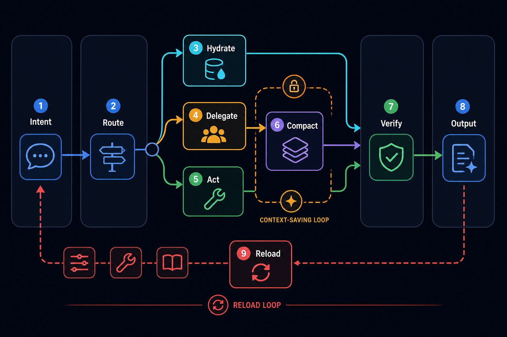
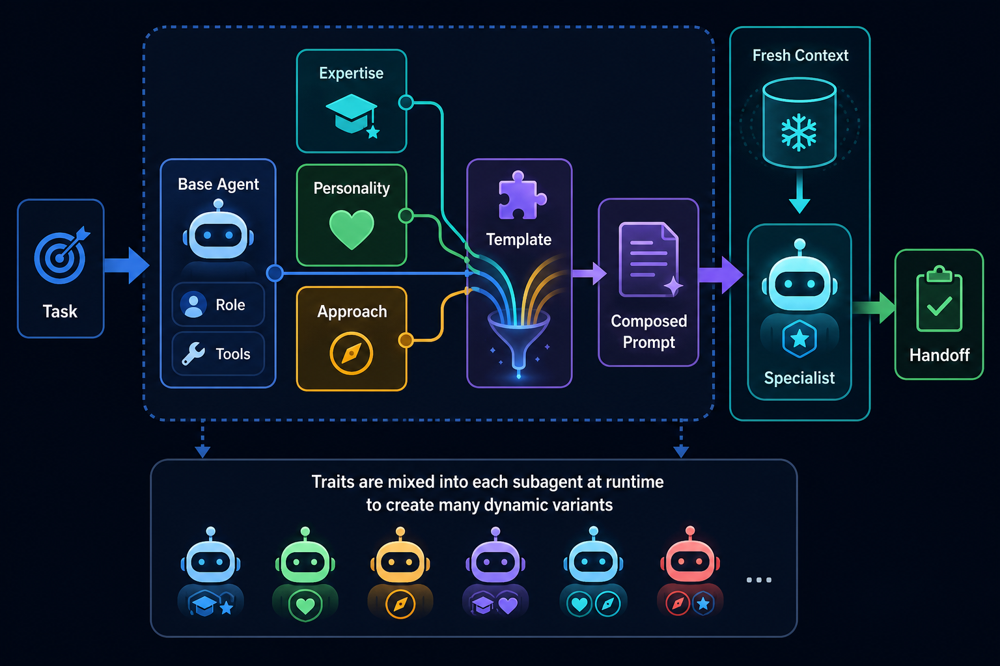
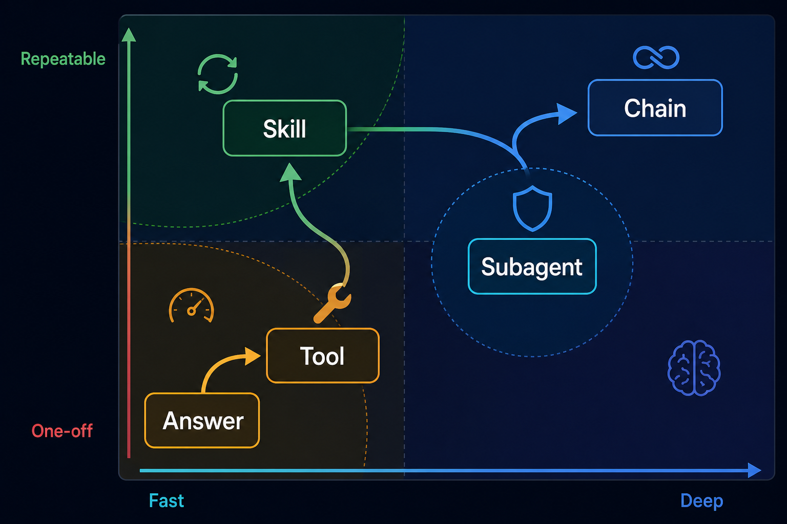

Readable mental model
Pi Agent Configuration Explained
Your dot_pi/agent directory turns Pi into an extensible coding-agent workbench. The important idea is not “many files”: it is a routing system that keeps the main conversation lean while loading skills, spawning trait-composed subagents, and calling concrete tools only when they are useful. The subagent + trait combination is the multiplier: a small set of base agents can become many on-the-fly specialists.

Configuration Map
The Pi config is deployed by chezmoi from dot_pi/agent/ to ~/.pi/agent/. It has five practical zones. Each zone has a different job, and mixing them up is where confusion usually starts.
Settings
settings.json sets the default model, provider, theme, thinking level, and packages.
Extensions
TypeScript modules add tools, slash commands, context overlays, cached docs, todos, and subagents.
Tools
Operational capabilities: browser checks, image generation, docs fetching, Linear, Fabric, web fetch, doc serving.
Skills
On-demand methods. Only descriptions are always visible; full instructions hydrate when the task matches.
Agents
Isolated workers for research, planning, implementation, review, PM work, and context building.
How a Request Moves Through Pi

1. Route
The main session decides whether the task is an answer, skill workflow, tool call, subagent run, or chain.
2. Isolate
Broad exploration goes to scout, eagle-scout, researcher, or specialized agents so raw search does not pollute the parent context.
3. Compact
Subagents return compact summaries or artifacts. Chains pass structured outputs between steps instead of full transcripts.
Request routing sequence
Traits + Subagents: Dynamic Specialists

A subagent file defines the execution shape: role, model, tools, default reads, progress behavior, and output expectations. A trait defines the behavioral overlay: what to pay attention to, how to reason, and how to execute. The composition engine loads traits.yaml, resolves requested trait keys, and renders agent-template.hbs into one composed system prompt.
This makes the system combinatorial. You do not need separate agents for security scout, performance scout, skeptical reviewer, disciplined implementer, or analytical planner. You choose the closest base agent and add 1-3 compact traits.
1. Base Agent
Pick by work shape: scout for recon, planner for plans, engineer for edits, reviewer for critique, project-manager for Linear.
2. Traits
Add domain focus, thinking style, and method: security, skeptical, thorough; or implementation, disciplined, systematic.
3. Fresh Context
The composed prompt launches isolated from the parent thread and returns a compact handoff, preserving context quality.
| Need | Base agent | Traits | Resulting specialist |
|---|---|---|---|
| Audit auth boundaries | scout | security, skeptical, thorough | Security auditor with codebase-recon scope. |
| Implement a planned refactor | engineer | implementation, disciplined, systematic | Careful implementer that verifies each phase. |
| Trace a complex subsystem | eagle-scout | codebase-research, analytical, thorough | Deep researcher that maps dependencies and data flow. |
| Review architectural fit | reviewer | code-review, analytical, thorough | Architecture reviewer focused on mental-model alignment. |
Capabilities You Already Have
Subagents
Use these when a task benefits from a fresh context window.
| Agent | Best use |
|---|---|
scout | Fast codebase reconnaissance. |
eagle-scout | Deep multi-file tracing and architecture mapping. |
planner | Phased plans with checkable criteria. |
engineer | Standard implementation work. |
lead-engineer | Complex refactors and architecture-sensitive changes. |
reviewer | Design/code review and mental-model alignment. |
project-manager | Linear issue/project workflows. |
Skills
Use these when a repeatable method matters more than a new execution context.
Tools
docsfetch, fabric, webfetch, playwright, pm, openai_image, html_docs_server.
Commands
/agents, /run, /chain, /parallel, /ctx, /todos, /tools, /fabric, caveman prompts.
Traits
Expertise + personality + approach fragments that shape subagents cheaply.
What To Use When

| Situation | Use | Reason | Example |
|---|---|---|---|
| Small known answer | Direct answer | Lowest overhead. | “What file defines the default model?” |
| Repeatable method | Skill | Hydrates instructions without separate execution. | Create HTML docs, design a skill, write prompts. |
| Concrete capability | Tool | Does real external/local work. | Generate image, fetch docs, inspect browser, manage Linear. |
| Broad exploration | Subagent | Fresh context, compressed handoff. | Map a module or audit security boundaries. |
| Repeatable multi-step work | Chain | Structured artifacts between phases. | Research → plan → implement. |
Design Trade-offs
google/gemini-3.5-flash, opencode-go/kimi-k2.6, openai-codex/gpt-5.5, and opencode/claude-opus-4-8; specialization comes from agent context and traits.Practical Operating Rules
- Use
html-docsfor documentation humans should read in a browser, especially when visual explanation matters. - Use
playwrightafter frontend or HTML changes; screenshots catch layout truth better than text inspection. - Use
docsfetchto cache external docs globally or per project before building docs that depend on a framework. - Use trait-composed subagents for broad research, specialized review, planning, PM, or anything that would load many files; keep the parent thread for decisions and compact artifacts.
- Pick base agent by work shape, then add 1-3 traits for expertise/personality/approach. Example:
scout + security + skeptical + thorough. - After changing dotfiles source, run
chezmoi applyand reload Pi before expecting runtime behavior to change.